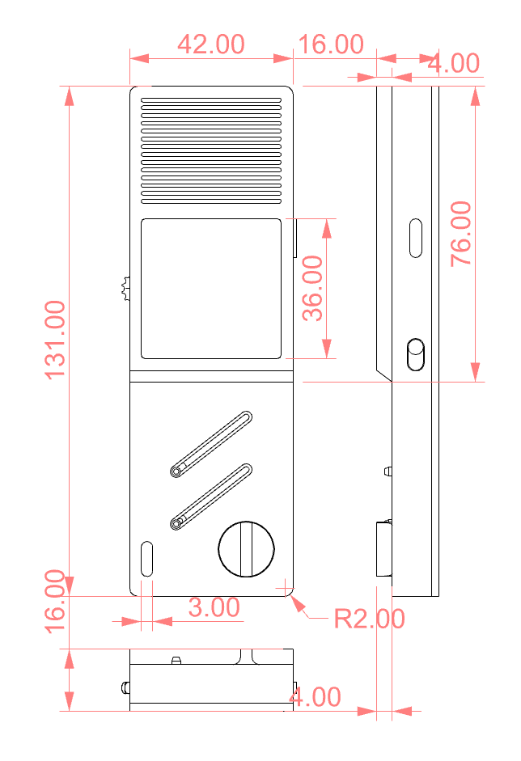

Ambient Machine is a minimalist white noise generator. It has a physical interface consist of the slider, the wheel button, and the knob. in the form factor of a handheld device.
Product rendering
In this final project, I will only implement and build the non-electronic or the enclosure design part, and the goal is to achieve the physical functionality of the interactive components including sliding, spinning, and scrolling.
Before designing in CAD, I sketched out my concept with the consideration of functionality, ergonomics, fabrication feasibility and aesthetics.
Initial sketches
After making around 20+ iterations, I decided the final form factor and a fabrication plan.
Iterations on form factor
The enclosure is composed by two types of parts: main chassis and functional components. The main chassis is splitted into front and back parts that can be press fit together. The functional components include two sliders and sliding slots, a wheel and axle, a knob and spinning slot, and a sliding switch and its sliding slot.
Fabrication mechanism (functional parts in red)
NOTE: In the concept design, there is a press button on the side designed for lock/power control. However, I found designing a pressing mechanism too complicated in such small-scale product so I decided to not fabricate it as functional part.
Technique 2: Grasshopper
For the wheel, or dial, I decided to use GH to design its “teeth” so I can have more control of its form. The basic idea is to generate the shape convexity and use BooleanDifference to subtract it from the cylinder. In the GH code, there are multiple parameters, such as r for the cylinder radius and the distance between the teeth and the cylinder center, x and y for the teeth shape, n for the teeth count.
Subtract the cylinders to create the teeth of the wheelDimensions of the wheelGH definition
Technique 3 & 4: 3D printing + press-fit
After testing, I realized that different tolerances should be implemented for different purpose. For instance, moveable parts such as sliders must have a higher tolerance than a press-fit part like the front and back parts. And different press-fit parts also can have different tolerance to achieve permanent or non-permanent assembly. The tolerances for moveable parts are:
Sliding slot (for sliders and switch, and the knob which is essentially also a sliding mechanism): 0.20mm
Sliding switch detail on the sideFront slider detailKnob detail
Wheel and axle: 0.50mm
Wheel detailComparing different tolerances for different mechanism (left: sliding, right: rotating)
On the other hand, the press-fit tolerances are:
Screen panel clip (for permanent assembly, i.e. it is super tight and can’t be disassembled): 0.20mm * 0.30mm
Clip mechanism detail 1Clip mechanism detail 2
I tested the clips and found this tolerance where the male part can be pressed into the female part with some force and they can be locked tightly once assembled.
Clip tolerance (tolerance between male part and female part, left: before insertion, right: inserted)
Front and back parts (non-permanent assembly): 0.10mm
Front and back part press-fit toleranceTolerance tests
Technical details
The whole chassis has a dimension of 131mm * 42mm * 16mm

Dimension of the enclosure
Final assembly
Pieces to assembleFinal assembled model
Bill of materials
I only use one material which is HatchBox White Filament 1.75mm
3D printing settings
All parts are printed under one setting: 0.2mm layer height, 0.42 line width, w/ tree supports